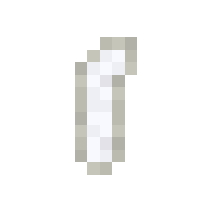

Orca
Orcas are neutral aquatic mammals that spawn in all nearly ocean biomes. Like vanilla dolphins, they can grant players
dolphins grace, follow players around, and can lead to treasure.
Spawning
Orcas are rare mobs that spawn in pairs in all nearly oceans, except for warm oceans. The way orcas spawn naturally is by replacing some naturally spawning aquatic mob. In the case for all oceans (except frozen oceans) each cod has a chance to be replaced with an orca pair. However, in frozen and deep frozen oceans, each salmon has a chance to be replaced with an orca. The table below shows the spawn rates of the orcas in the biomes they spawn in.
| Biome | Spawn Chance (Replacement Chance) | Group Size |
|---|---|---|
| Ocean/Deep Ocean | 1% (Cod) | 2 |
| Cold Ocean/Deep Cold Ocean | 1% (Cod) | 2 |
| Lukewarm Ocean / Deep Lukewarm Ocean | 1% (Cod) | 2 |
| Frozen Ocean / Deep Frozen Ocean | 1% (Salmon) | 2 |
Items
Item drop chances
From the orca's loot table, it has to potential to drop 3 - 4 items, but it can be less if the one of the items selected from the pool can drop 0 times. It has the largest pool of items it can drop out of any mob added by Blue Depths. It can drop orca teeth, great white shark teeth, bones, tuna fillets, salmon, and cod. Unlike some other mobs in Blue Depths, all of these items can be dropped regardless if the player kills the orca or not. Below is a table that shows the item drop chances.
| Item | Chance | Count |
|---|---|---|
| Orca Tooth | 16.67% | 1 - 3 |
| Great White Shark Tooth | 16.67% | 0 - 2 |
| Bone | 16.67% | 0 - 2 |
| Tuna Fillet | 16.67% | 1 |
| Salmon | 16.67% | 1 - 4 |
| Cod | 16.67% | 1 - 4 |
Orca Tooth

The orca tooth is collectible/trophy item. Players can put it in item frames or keep it in storage. Aside from being a collectible, it also serves as one of the items that is needed to perform the ritual in summoning the Nameless Depth.
Behavior
Orcas function the same as Minecraft's vanilla dolphins. They can give players dolphins grace to nearby players and follow them around. They can also lead players to underwater structures if fed raw fish. They spawn in pairs, reflecting real world behavior of orcas being social animals. They only spawn in pairs to reduce any lag from spawning too many mobs at once.
If attacked, all nearby orcas and dolphins will become aggressive toward the player and begin attacking. Orca attacks are especially deadly since they deal way more damage to players than dolphins do (2.25 hearts of damage for dolphins, while orcas can deal 7.5 hearts).
Unlike with the majority of mobs added by Blue Depths, they cannot be bucketed or bred by the player. The only way to keep an orca is by having it follow you and using a nametag on it to prevent it from despawning (keep in mind that the given name by the nametag will not actually show on the orca like vanilla mobs).
Future Plans
Since the orca remains the only mob that doesn't have much in terms of new features upon initial release, plans are being made to add a new mechanic to the orcas so they feel more unique to dolphins. As of currently, there are no plans on implementing breeding or the life cycle mechanic that other larger Blue Depths mobs have. The new mechanic will be something completely different.
The date of when the orca will have it's new mechanic added still hasn't been decided. The current update roadmap only has the final part of Roaring Rivers as something that will be coming up next (or already released depending on when you read this article). The update after Roaring Rivers Part 2 has still not been decided yet, but it will be coming. It is possible the update after Roaring Rivers will be when the orca receives the new feature, but it all depends if the theme of the update has any relation to the orca.
History
Development History
| Datapack Version | Addition/Change |
|---|---|
| 1.0.0 (Initial Release) |
|
Gallery